कक्षा 11 राजनीति विज्ञान (राजनीतिक सिद्धांत)
अध्याय 17: राष्ट्रवाद
(NATIONALISM)
राष्ट्रवाद का अर्थ, संकल्पना और कल्पित समुदाय
राष्ट्रवाद अपने राष्ट्र के प्रति निष्ठा, प्रेम और एकता की वह प्रबल भावना है जो विभिन्न पृष्ठभूमि के लोगों को एक साझा राजनीतिक पहचान में बांधती है। आधुनिक विश्व इतिहास में राष्ट्रवाद सबसे शक्तिशाली राजनीतिक ताकतों में से एक रहा है।
📌 मुख्य सैद्धांतिक आधार: "राष्ट्रवाद ने एक ओर 19वीं-20वीं सदी में साम्राज्यवाद और औपनिवेशिक दासता से मुक्ति दिलाकर स्वतंत्र राष्ट्र-राज्यों का निर्माण किया, तो दूसरी ओर इसने उग्र रूप लेकर विश्व युद्धों और नरसंहारों को भी जन्म दिया।"
1.1 राष्ट्रवाद के दो प्रमुख पहलू:
- सकारात्मक शक्ति (एकता और मुक्ति): छोटे-छोटे सामंती राज्यों को जोड़कर अखंड राष्ट्र का निर्माण (जैसे जर्मनी और इटली का एकीकरण) तथा औपनिवेशिक शोषण से स्वाधीनता (जैसे भारत का स्वतंत्रता संग्राम)।
- नकारात्मक शक्ति (कट्टरता और विभाजन): उग्र जातीय राष्ट्रवाद के कारण साम्राज्यों का विघटन, सीमा विवाद, नस्लीय घृणा और युद्ध।
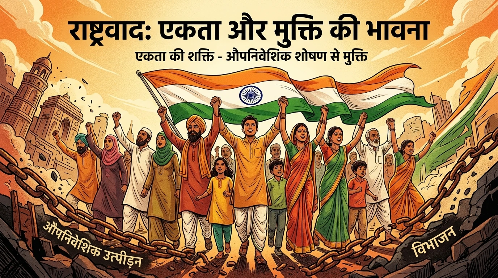
🎨 कार्टून 1 विश्लेषण: राष्ट्रवाद—एकता की शक्ति और औपनिवेशिक बेड़ियों से मुक्ति
चित्र का मुख्य संदेश: जब देश के विभिन्न धर्मों, भाषाओं और जातियों के नागरिक तिरंगे के नीचे हाथ में हाथ डालकर एकजुट होते हैं, तो वे विदेशी शोषण की बेड़ियों को तोड़कर स्वतंत्रता और स्वाभिमान का नया सवेरा लाते हैं।
राष्ट्र की संकल्पना: एक साझा विश्वास और कल्पित समुदाय
राष्ट्र कोई भौतिक वस्तु या केवल ईंट-पत्थर का ढांचा नहीं है; राष्ट्र लोगों के साझा विश्वास (Shared Belief) और मानसिक जुड़ाव पर टिका होता है।
प्रसिद्ध समाजशास्त्री बेनेडिक्ट एंडरसन (Benedict Anderson): "राष्ट्र एक 'कल्पित समुदाय' (Imagined Community) है, क्योंकि इसके अधिकांश नागरिक एक-दूसरे को कभी व्यक्तिगत रूप से नहीं देखते, फिर भी वे अपने मन में एक साझा बंधन और एकता महसूस करते हैं।"
1.2 राष्ट्र निर्माण के मानसिक आधार:
- आत्म-पहचान: जब लोग खुद को एक विशिष्ट समूह और राष्ट्र का अभिन्न हिस्सा मानने लगते हैं।
- अदृश्य धागा: कश्मीर से कन्याकुमारी तक विभिन्न प्रांतों के लोग बिना मिले भी एक-दूसरे को अपना देशवासी मानते हैं।
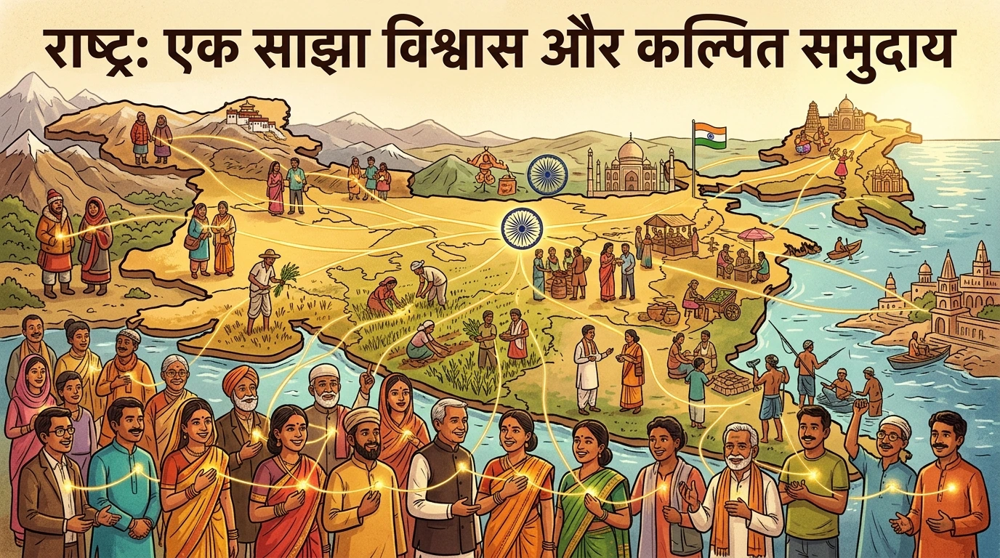
🎨 कार्टून 2 विश्लेषण: राष्ट्र—अदृश्य भावनात्मक धागों से जुड़ा कल्पित समुदाय
चित्र का मुख्य संदेश: पहाड़ों, मैदानों और समुद्र तटों पर बसे करोड़ों भारतीय बिना मिले भी साझी आस्था, तिरंगे और संविधान के स्वर्णिम सूत्र से एक परिवार की तरह जुड़े हुए हैं।
राष्ट्र और राज्य में मौलिक अंतर (Nation vs State)
राजनीति विज्ञान में 'राष्ट्र' और 'राज्य' दो भिन्न किंतु परस्पर जुड़े हुए शब्द हैं:
2.1 राष्ट्र बनाम राज्य:
- राष्ट्र (Nation): एक मनोवैज्ञानिक, सांस्कृतिक और भावनात्मक समुदाय है जो साझी ऐतिहासिक चेतना पर आधारित होता है।
- राज्य (State): एक वैधानिक और राजनीतिक संस्था है जिसके 4 अनिवार्य तत्व होते हैं: 1. जनसंख्या, 2. निश्चित भूभाग, 3. सरकार, और 4. संप्रभुता।
- राष्ट्र-राज्य (Nation-State): जब किसी राष्ट्र के लोगों को अपनी संप्रभु सरकार और राजनीतिक स्वायत्तता मिल जाती है, तो वह राष्ट्र-राज्य कहलाता है।
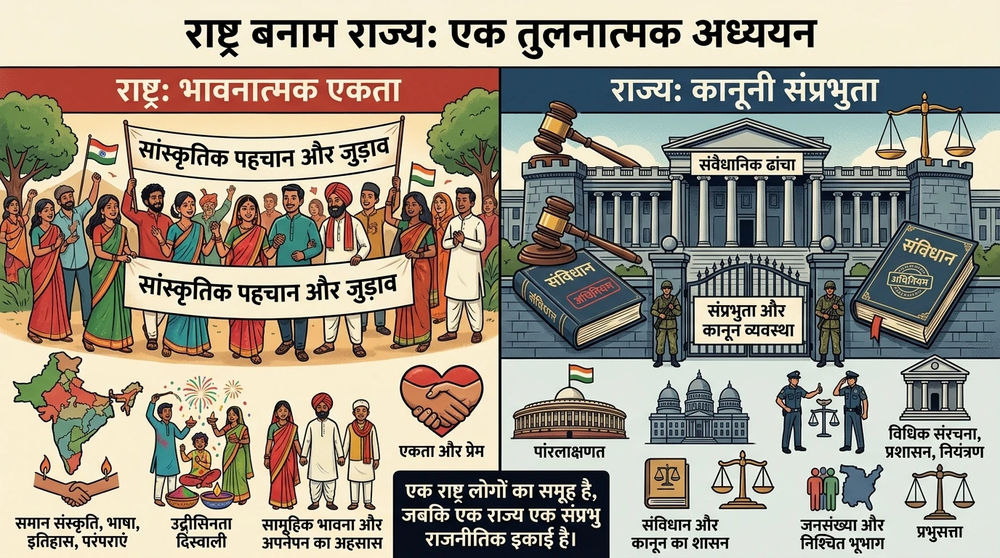
🎨 कार्टून 3 विश्लेषण: राष्ट्र और राज्य—भावनात्मक एकता और कानूनी संप्रभुता का संगम
चित्र का मुख्य संदेश: 'राष्ट्र' जनता के दिलों की धड़कन और भावनात्मक एकता है, जबकि 'राज्य' संविधान, कानून और संप्रभु सरकार का मजबूत सुरक्षात्मक किला है।
साझी ऐतिहासिक स्मृतियां और स्वतंत्रता संग्राम (Shared History)
राष्ट्र के लोग स्वयं को एक ऐसे साझी अतीत से जुड़ा हुआ पाते हैं जिसमें उनके पूर्वजों के त्याग, बलिदान, युद्ध और सांस्कृतिक उपलब्धियां शामिल होती हैं।
💡 व्यावहारिक उदाहरण (भारतीय स्वतंत्रता संग्राम): 1857 की क्रांति, जलियांवाला बाग, दांडी यात्रा और भगत सिंह, गांधीजी, सुभाष चंद्र बोस का बलिदान—ये सभी ऐतिहासिक स्मृतियां भारत के हर कोने के नागरिक को एक साझी राष्ट्रीय विरासत में पिरोती हैं।
3.1 साझा इतिहास के प्रमुख पहलू:
- सामूहिक गौरव: प्राचीन सभ्यता, वैज्ञानिक उपलब्धियों और कलात्मक धरोहर पर गर्व।
- साझा संघर्ष: विदेशी आक्रमणकारियों और औपनिवेशिक शोषण के विरुद्ध मिलकर लड़ा गया संघर्ष।
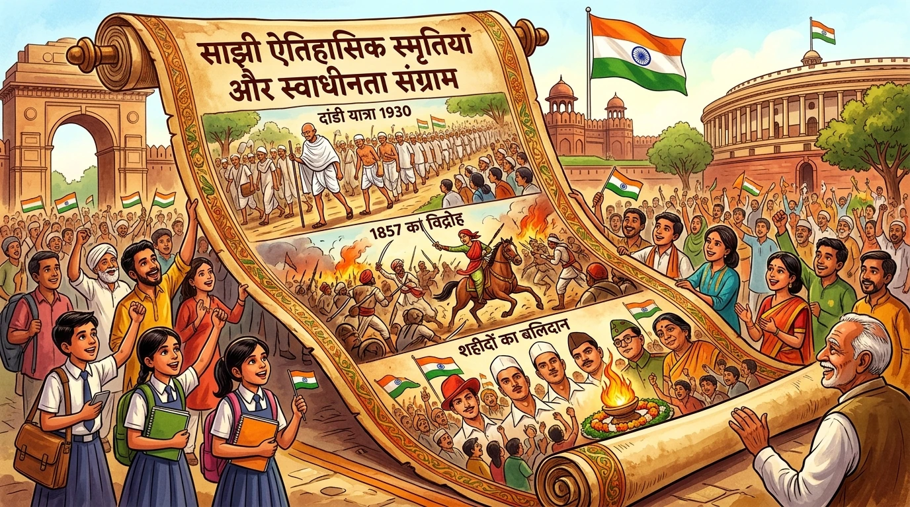
🎨 कार्टून 4 विश्लेषण: साझी ऐतिहासिक स्मृतियां—त्याग और बलिदान की अमर धरोहर
चित्र का मुख्य संदेश: स्वतंत्रता संग्राम की अमर गाथाएं और वीर शहीदों का बलिदान हर भारतीय के हृदय में राष्ट्रभक्ति की अखंड ज्योति जलाए रखता है।
भूक्षेत्र और मातृभूमि का भावनात्मक जुड़ाव (Shared Homeland)
किसी राष्ट्र के अस्तित्व के लिए एक निश्चित भूभाग (Territory) और अपनी 'मातृभूमि' (Motherland / Homeland) के प्रति पवित्र भावनात्मक लगाव आवश्यक होता है।
4.1 भूभाग और राष्ट्रीय पहचान:
- मातृभूमि का सम्मान: नदियाँ, पर्वत, वन और खेत केवल संसाधन नहीं, बल्कि 'भारत माता' के रूप में वंदनीय हैं।
- भौगोलिक अखंडता: देश की सीमाओं की रक्षा के लिए नागरिकों और सैनिकों का अटूट समर्पण।
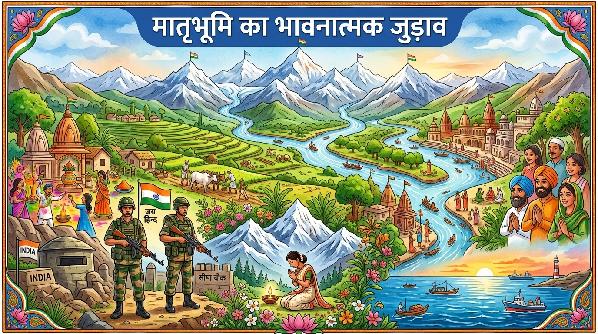
🎨 कार्टून 5 विश्लेषण: मातृभूमि—हिमालय से हिंद महासागर तक अटूट भावनात्मक बंधन
चित्र का मुख्य संदेश: भारत की पावन धरती, गंगा-यमुना, हिमालय और खेत-खलिहान—यह मातृभूमि हर देशवासी के अस्तित्व की पहचान और गौरव है।
साझे राजनीतिक आदर्श और संवैधानिक मूल्य (Shared Political Ideals)
आधुनिक लोकतांत्रिक राष्ट्र केवल खून के रिश्ते या भाषा पर नहीं, बल्कि साझे राजनीतिक मूल्यों पर टिके होते हैं।
5.1 भारतीय राष्ट्रवाद के 4 मार्गदर्शक संवैधानिक मूल्य:
- 1. लोकतंत्र (Democracy): जनता का, जनता द्वारा और जनता के लिए शासन।
- 2. पंथनिरपेक्षता (Secularism): सभी धर्मों को समान सम्मान और धार्मिक स्वतंत्रता।
- 3. सामाजिक न्याय (Social Justice): समानता, बंधुता और कमजोर वर्गों का उत्थान।
- 4. विधि का शासन (Rule of Law): संविधान की सर्वोच्चता और कानून के समक्ष समता।
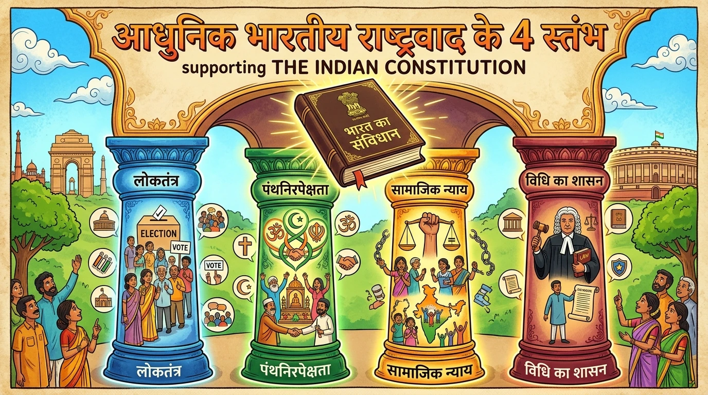
🎨 कार्टून 6 विश्लेषण: संवैधानिक आदर्श—लोकतंत्र, पंथनिरपेक्षता और न्याय का प्रकाश
चित्र का मुख्य संदेश: भारतीय संविधान की प्रस्तावना में निहित आदर्श ही वे साझा मूल्य हैं जो 140 करोड़ भारतीयों को एक सशक्त लोकतांत्रिक राष्ट्र बनाते हैं।
साझी राजनीतिक पहचान और लोकतांत्रिक नागरिकता (Shared Identity)
विभिन्न जातियों, भाषाओं और क्षेत्रों के बावजूद जब लोग एक साझा नागरिक पहचान (Citizen Identity) को अपनी प्राथमिक पहचान मानते हैं, तो राष्ट्र मजबूत होता है।
6.1 साझी पहचान के प्रमुख तत्व:
- एकल नागरिकता: हम सबसे पहले और अंततः केवल 'भारतीय' हैं।
- समान मताधिकार: देश के भाग्य निर्माण में अमीर-गरीब सभी को एक बराबर वोट की शक्ति।
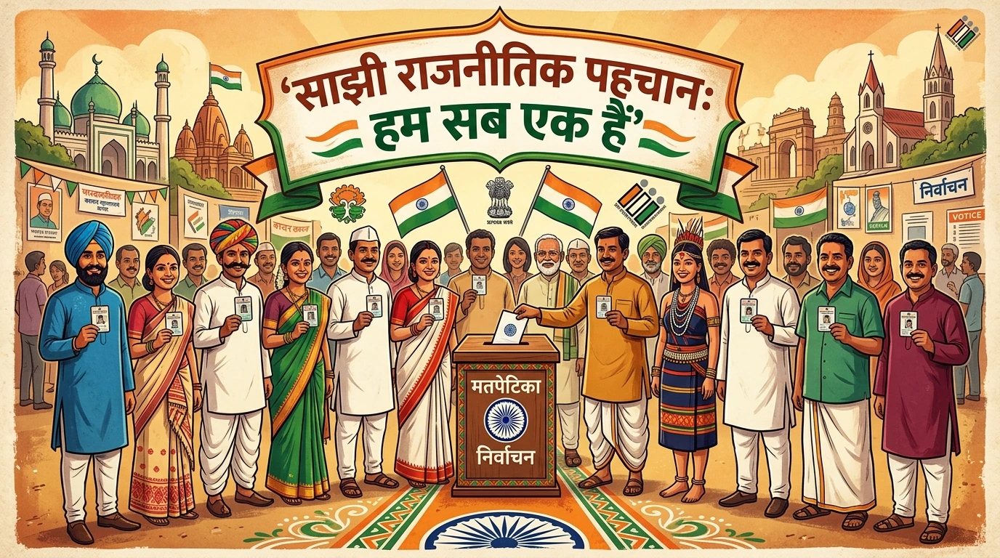
🎨 कार्टून 7 विश्लेषण: साझी राजनीतिक पहचान—'हम सब एक हैं'
चित्र का मुख्य संदेश: मतपेटी और संविधान के समक्ष हर भारतीय समान है; यही साझी राजनीतिक पहचान लोकतंत्र की रीढ़ है।
राष्ट्रीय आत्मनिर्णय का अधिकार (Right to Self-Determination)
राष्ट्रीय आत्मनिर्णय का अर्थ है कि किसी भी सांस्कृतिक या राष्ट्रीय समुदाय को अपने राजनीतिक भविष्य, शासन प्रणाली और विकास के मार्ग को स्वयं चुनने का अधिकार होना चाहिए।
💡 ऐतिहासिक परिप्रेक्ष्य (वुडरो विल्सन के 14 सूत्र - 1919): प्रथम विश्व युद्ध के बाद अमेरिकी राष्ट्रपति वुडरो विल्सन ने राष्ट्रीय आत्मनिर्णय का सिद्धांत प्रतिपादित किया, जिसके तहत ऑस्ट्रिया-हंगरी और ऑटोमन साम्राज्य के विघटन से कई नए यूरोपीय राष्ट्र-राज्य बने।
7.1 आत्मनिर्णय की प्रमुख मांगें:
- स्वशासन की मांग: अपने क्षेत्र के शासन और कानूनों का स्वयं संचालन करना।
- स्वतंत्र राष्ट्र का गठन: विदेशी आधिपत्य से पूर्ण स्वाधीनता पाना।
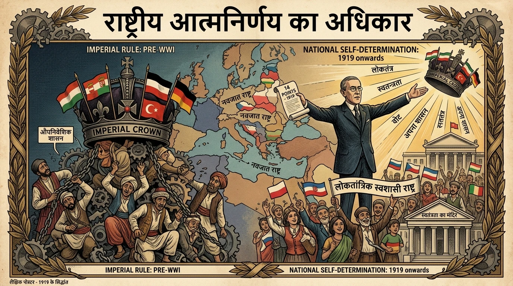
🎨 कार्टून 8 विश्लेषण: राष्ट्रीय आत्मनिर्णय—स्वशासन और स्वाधीनता की आकांक्षा
चित्र का मुख्य संदेश: प्रत्येक जनसमूह को अपने राजनीतिक भविष्य और विकास के मार्ग को लोकतांत्रिक तरीके से चुनने का अधिकार है।
'एक संस्कृति - एक राज्य' का सिद्धांत और इसकी गंभीर सीमाएं
19वीं सदी में यह माना गया कि प्रत्येक अलग संस्कृति या भाषा के लोगों का अपना एक अलग स्वतंत्र राज्य होना चाहिए। परंतु आधुनिक युग में यह सिद्धांत अव्यावहारिक और खतरनाक सिद्ध हुआ है।
8.1 'एक संस्कृति - एक राज्य' की विफलता के कारण:
- दुनिया में हजारों संस्कृतियां: दुनिया में 6,000 से अधिक भाषाएं और संस्कृतियां हैं, यदि हर एक के लिए अलग राज्य बने तो दुनिया में अराजकता फैल जाएगी।
- कोई भी राज्य 100% एकरूप नहीं: हर देश में अल्पसंख्यक समुदाय रहते ही हैं; अलग राज्य बनाने से समस्या हल नहीं होती।
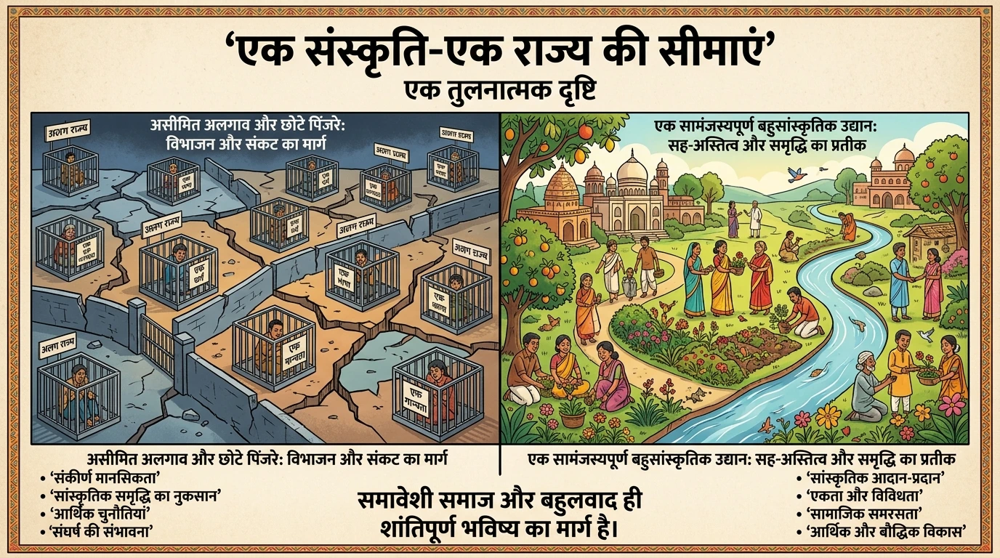
🎨 कार्टून 9 विश्लेषण: 'एक संस्कृति-एक राज्य' की सीमाएं—विभाजन नहीं, सह-अस्तित्व समाधान
चित्र का मुख्य संदेश: सीमाओं को टुकड़ों में बांटने से शांति नहीं मिलती; वास्तविक समाधान बहुलवाद और सभी संस्कृतियों के पारस्परिक सम्मान में है।
जातीय राष्ट्रवाद के खतरे एवं ऐतिहासिक वैश्विक विभाजन
जब राष्ट्रवाद किसी एक धर्म या जाति के वर्चस्व (Ethnic Nationalism) पर आधारित हो जाता है, तो वह अल्पसंख्यकों के अधिकारों को कुचलता है और भयानक जातीय हिंसा (Ethnic Cleansing) को जन्म देता है।
9.1 संकीर्ण जातीय राष्ट्रवाद के दुष्परिणाम:
- अल्पसंख्यकों का निष्कासन: बहुसंख्यक समुदाय द्वारा अल्पसंख्यकों को 'बाहरी' मानकर प्रताड़ित करना।
- शरणार्थी संकट: लाखों बेकसूर लोगों का अपने घरों से विस्थापन और पलायन।
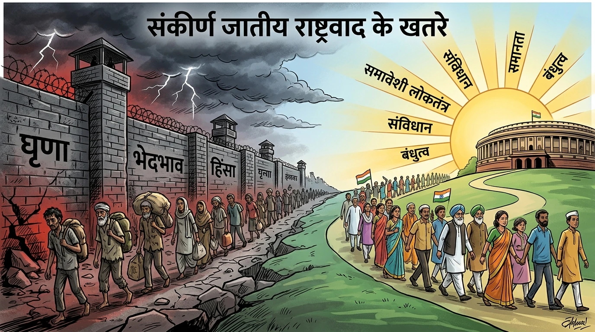
🎨 कार्टून 10 विश्लेषण: संकीर्ण राष्ट्रवाद के खतरे—विभाजन और घृणा का अंधकार
चित्र का मुख्य संदेश: नफरत और संकीर्णता देश को तोड़ती है; केवल समावेशी और लोकतांत्रिक राष्ट्रवाद ही समाज को सुरक्षित रख सकता है।
ऐतिहासिक वैश्विक विभाजन के उदाहरण: यूगोस्लाविया और सोवियत संघ
1990 के दशक में उग्र जातीय राष्ट्रवाद के कारण यूगोस्लाविया में खूनी गृहयुद्ध हुआ और बोस्निया, क्रोएशिया, सर्बिया आदि देशों में विभाजन हो गया। इसी प्रकार 1991 में सोवियत संघ 15 स्वतंत्र देशों में बंट गया।
9.2 इन ऐतिहासिक घटनाओं से सबक:
- विविधता का सम्मान जरूरी: जबरन एकरूपता थोपने से राष्ट्र टूट जाते हैं।
- सच्चा लोकतंत्र समाधान: सभी समुदायों को सत्ता और शासन में निष्पक्ष भागीदारी देना ही अखंडता का मूल मंत्र है।
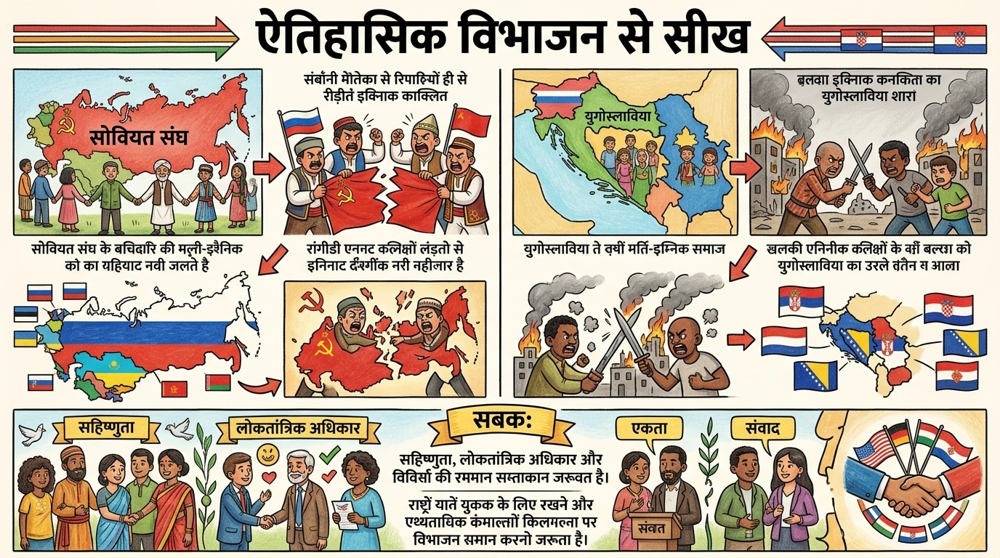
🎨 कार्टून 11 विश्लेषण: इतिहास की चेतावनी—यूगोस्लाविया संकट और सहिष्णुता की सीख
चित्र का मुख्य संदेश: जातीय टकराव और हठधर्मिता साम्राज्यों को तोड़ देती है; लोकतांत्रिक संवाद और अधिकारों का सम्मान ही राष्ट्र को सुरक्षित रखता है।
समावेशी और बहुलवादी राष्ट्रवाद: भारतीय मॉडल ("विविधता में एकता")
भारतीय राष्ट्रवाद की अनूठी विशेषता यह है कि यह किसी एक भाषा, नस्ल या धर्म पर नहीं, बल्कि सांस्कृतिक बहुलवाद (Cultural Pluralism) पर आधारित है।
10.1 भारतीय बहुलवादी राष्ट्रवाद के मुख्य स्तंभ:
- विविधता में एकता: विभिन्न भाषाई (हिंदी, तमिल, बंगाली, मराठी आदि) और धार्मिक समूहों का सम्मानपूर्वक सह-अस्तित्व।
- समावेशी संविधान: अल्पसंख्यकों के सांस्कृतिक व धार्मिक अधिकारों (अनुच्छेद 29-30) की विशेष गारंटी।
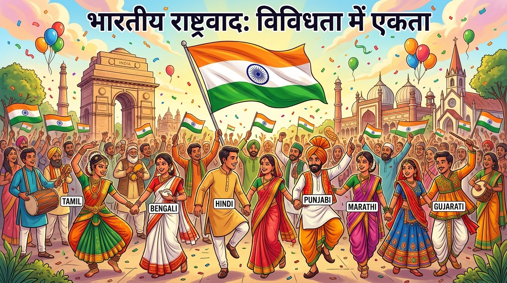
🎨 कार्टून 12 विश्लेषण: भारतीय राष्ट्रवाद—'विविधता में एकता' का भव्य उपवन
चित्र का मुख्य संदेश: भारतीय राष्ट्रवाद का उपवन सभी भाषाओं, परंपराओं और धर्मों के रंगों से महकता है—यही अखंड भारत की अमर पहचान है।
रवींद्रनाथ टैगोर का राष्ट्रवाद पर दृष्टिकोण (मानवतावाद बनाम संकीर्ण देशभक्ति)
नोबेल पुरस्कार विजेता गुरुदेव रवींद्रनाथ टैगोर ने उग्र और संकीर्ण राष्ट्रवाद की कड़ी आलोचना की थी और मानवतावाद (Humanism) को राष्ट्र से ऊपर रखा था।
रवींद्रनाथ टैगोर का अमर विचार: "देशभक्ति हमारा अंतिम आध्यात्मिक सहारा नहीं हो सकती; मेरा शरणस्थल तो 'मानवता' है। मैं हीरे के दाम में कांच नहीं खरीदूंगा, और जब तक जीवित हूँ, मानवता पर देशभक्ति को विजयी नहीं होने दूंगा।"
11.1 टैगोर के विचारों की प्रासंगिकता:
- अंधराष्ट्रवाद पर रोक: दूसरों से घृणा करना देशभक्ति नहीं है; सभी मनुष्यों के प्रति करुणा ही सच्चा धर्म है।
- विश्व भारती का आदर्श: 'जहाँ सारा संसार एक घोंसले में मिल सके' (विश्व बंधुत्व की भावना)।
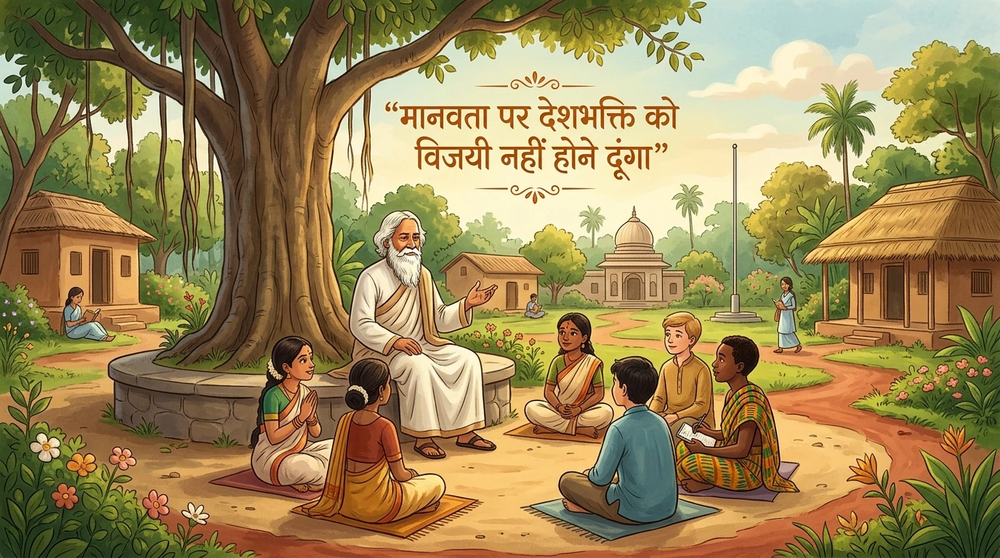
🎨 कार्टून 13 विश्लेषण: गुरुदेव टैगोर का मानवतावाद—देशभक्ति से ऊपर विश्व बंधुत्व
चित्र का मुख्य संदेश: टैगोर सिखाते हैं कि सच्ची देशभक्ति दूसरों से नफरत करना नहीं, बल्कि विश्व मानवता, शांति और सत्य के साथ खड़े होना है।
लोकतांत्रिक राष्ट्रवाद बनाम संकीर्ण/जातीय राष्ट्रवाद
आधुनिक राजनीतिक सिद्धांत में राष्ट्रवाद के दो रूपों में स्पष्ट अंतर किया जाता है:
12.1 दोनों रूपों का तुलनात्मक विश्लेषण:
- लोकतांत्रिक / नागरिक राष्ट्रवाद (Civic Nationalism): संविधान, विधि के शासन और समान नागरिक अधिकारों पर आधारित; सभी का स्वागत करने वाला।
- जातीय राष्ट्रवाद (Ethnic Nationalism): जन्म, नस्ल और धर्म पर आधारित; दूसरों के प्रति असहिष्णु और बहिष्कारवादी।
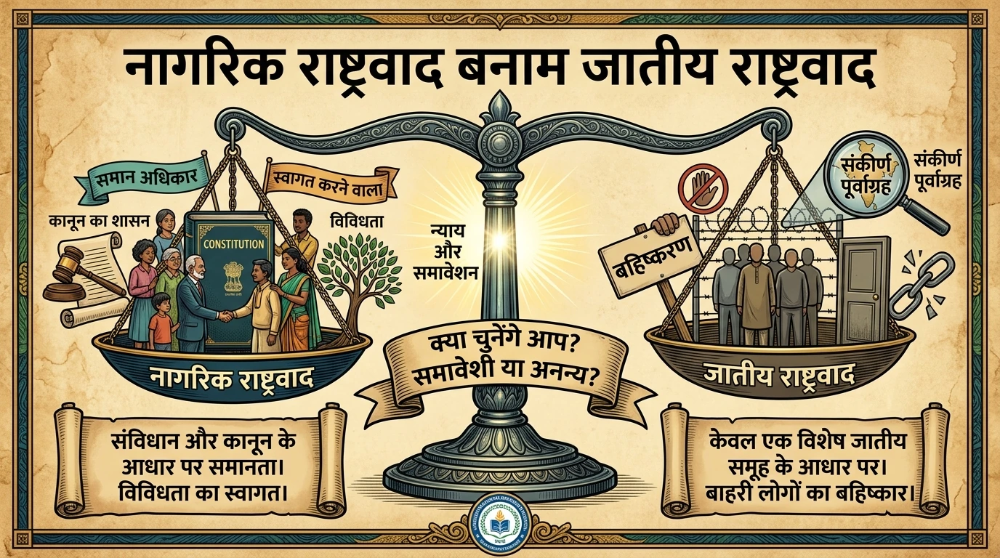
🎨 कार्टून 14 विश्लेषण: नागरिक राष्ट्रवाद बनाम जातीय राष्ट्रवाद—समावेशी मार्ग ही सुरक्षित
चित्र का मुख्य संदेश: संविधान पर आधारित नागरिक राष्ट्रवाद देश को जोड़ता है, जबकि जातीय कट्टरता देश को पतन की ओर ले जाती है।
अल्पसंख्यकों के अधिकारों का संरक्षण और सांस्कृतिक स्वायत्तता
किसी भी राष्ट्र की महानता की वास्तविक कसौटी यह है कि वह अपने अल्पसंख्यक समुदायों को कितनी सुरक्षा और स्वाभिमान प्रदान करता है।
12.2 स्वायत्तता के संवैधानिक उपाय:
- भाषाई व शैक्षिक अधिकार: अपनी मातृभाषा में शिक्षा पाने और संस्थान चलाने का हक।
- स्थानीय स्वशासन: जनजातीय क्षेत्रों के लिए संविधान की 5वीं और 6वीं अनुसूची के तहत विशेष स्वायत्त परिषदें।
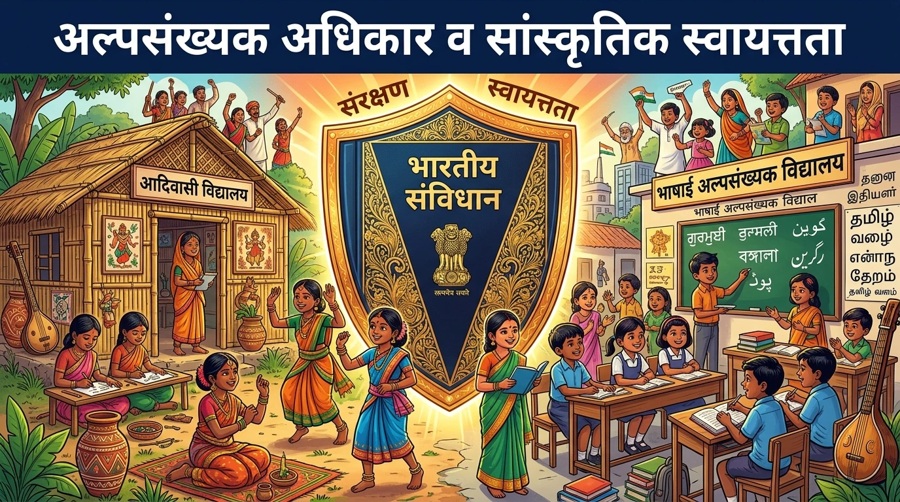
🎨 कार्टून 15 विश्लेषण: अल्पसंख्यक संरक्षण—सच्चे लोकतंत्र का सुरक्षा कवच
चित्र का मुख्य संदेश: जब हर अल्पसंख्यक समुदाय सुरक्षित और सम्मानित महसूस करता है, तभी राष्ट्र आंतरिक रूप से सबसे अधिक शक्तिशाली बनता है।
संवैधानिक देशभक्ति की संकल्पना (Constitutional Patriotism - जुर्गन हैबरमास)
जर्मन दार्शनिक जुर्गन हैबरमास ने 'संवैधानिक देशभक्ति' का सिद्धांत दिया, जिसके अनुसार नागरिकों का सच्चा लगाव किसी अमूर्त नस्ल या अतीत से नहीं, बल्कि संविधान के लोकतांत्रिक मूल्यों और अधिकारों से होना चाहिए।
13.1 संवैधानिक देशभक्ति के मूल तत्व:
- संविधान के प्रति निष्ठा: कानून, मानवाधिकार और न्यायपालिका का आदर करना ही सच्ची देशभक्ति है।
- तार्किक नागरिकता: अंधविश्वास और कट्टरता के स्थान पर तार्किक लोकतांत्रिक संवाद को अपनाना।
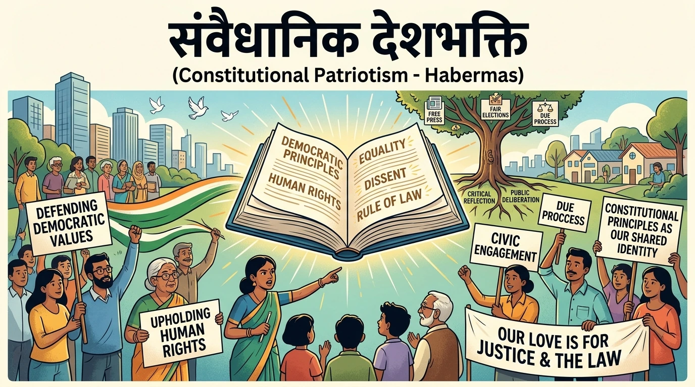
🎨 कार्टून 16 विश्लेषण: संवैधानिक देशभक्ति—लोकतांत्रिक मूल्यों के प्रति अटूट समर्पण
चित्र का मुख्य संदेश: संविधान के लोकतांत्रिक आदर्शों, समानता और न्याय की रक्षा करना ही 21वीं सदी की सर्वोच्च देशभक्ति है।
खेल, कला और संस्कृति में राष्ट्रवाद की सकारात्मक अभिव्यक्ति
ओलंपिक, क्रिकेट, चंद्रयान मिशन, सिनेमा और संगीत जैसे क्षेत्र राष्ट्रीय गौरव और एकता की सबसे सुंदर और सकारात्मक अभिव्यक्ति करते हैं।
13.2 सकारात्मक राष्ट्रवाद के प्रतीक:
- खेलों में राष्ट्रीय तिरंगा: जब कोई खिलाड़ी पदक जीतता है, तो पूरा देश जाति-धर्म भूलकर तिरंगे के सम्मान में खड़ा होता है।
- वैज्ञानिक उपलब्धियां: इसरो (ISRO) के अंतरिक्ष मिशन पूरे राष्ट्र में प्रेरणा और आत्मविश्वास का संचार करते हैं।
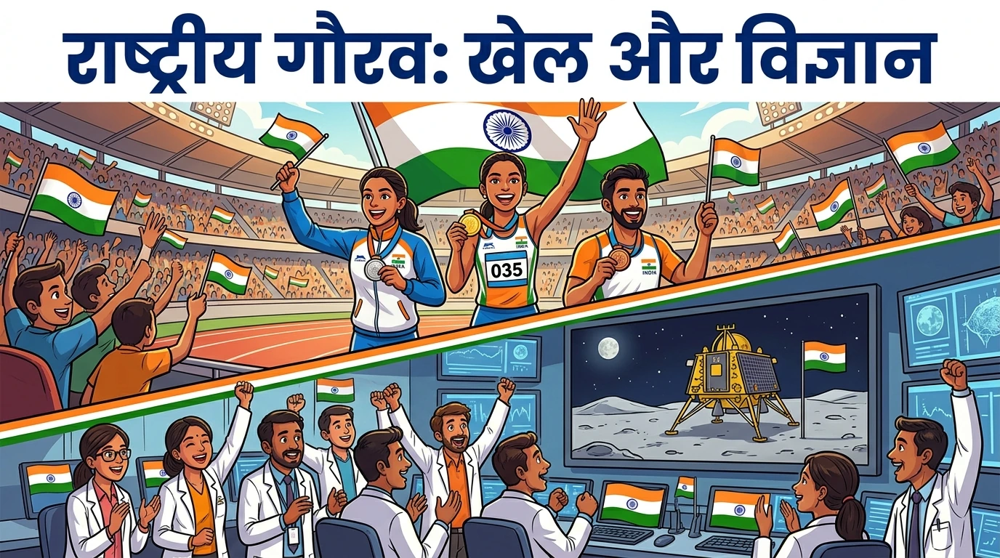
🎨 कार्टून 17 विश्लेषण: राष्ट्रीय गौरव—खेल, अंतरिक्ष और कला की विजय
चित्र का मुख्य संदेश: जब मैदान पर तिरंगा लहराता है और अंतरिक्ष में चंद्रयान पहुंचता है, तो 140 करोड़ दिलों में एक साथ गौरव का संचार होता है।
आधुनिक डिजिटल युग में राष्ट्रवाद और साइबर संप्रभुता
आज के युग में सीमाओं की रक्षा केवल जमीन पर नहीं, बल्कि डिजिटल स्पेस, साइबर सुरक्षा और डेटा संप्रभुता में भी जरूरी हो गई है।
14.1 डिजिटल राष्ट्रवाद के प्रमुख पहलू:
- आत्मनिर्भर डिजिटल भारत: UPI, स्वदेशी ऐप्स और सेमीकंडक्टर निर्माण में आत्मनिर्भरता।
- साइबर सुरक्षा: फर्जी खबरों (Fake News) और विदेशी दुष्प्रचार से देश के सामाजिक सद्भाव की रक्षा।
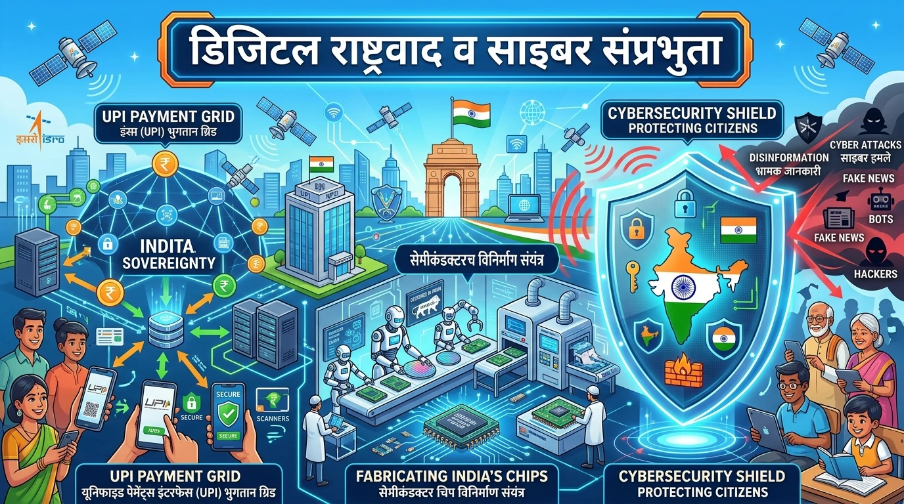
🎨 कार्टून 18 विश्लेषण: डिजिटल राष्ट्रवाद—साइबर सुरक्षा और तकनीकी आत्मनिर्भरता
चित्र का मुख्य संदेश: डिजिटल युग में तकनीकी आत्मनिर्भरता (UPI, चिप्स) और साइबर सुरक्षा ही देश की आधुनिक ढाल हैं।
राष्ट्रवाद और अंतरराष्ट्रीय सहयोग (राष्ट्रहित बनाम वैश्विक दायित्व)
सच्चा राष्ट्रवाद दुनिया से अलग-थलग रहना नहीं सिखाता; यह अपने राष्ट्रहित की रक्षा करते हुए पूरे विश्व के कल्याण (विश्व कल्याण) में योगदान देता है।
14.2 राष्ट्रहित और वैश्विक शांति का संतुलन:
- गुटनिरपेक्षता व संप्रभुता: किसी महाशक्ति का पिछलग्गू बने बिना स्वतंत्र विदेश नीति का पालन।
- विश्व बंधुत्व: आपदाओं और संकट के समय दूसरे देशों की निःस्वार्थ सहायता (जैसे 'वैक्सीन मैत्री' व राहत अभियान)।
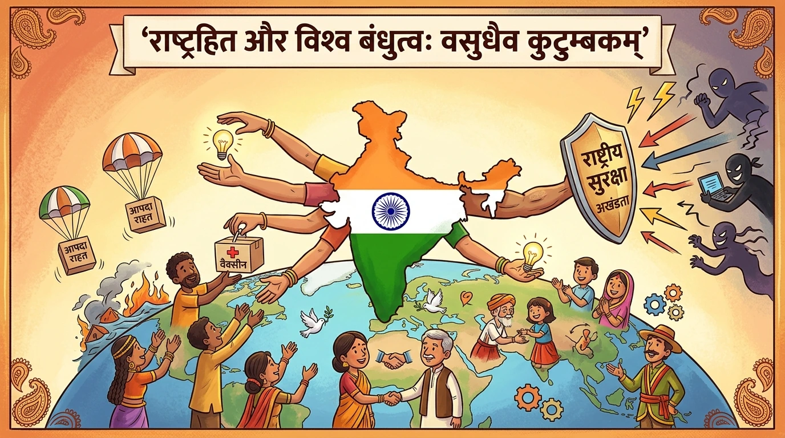
🎨 कार्टून 19 विश्लेषण: राष्ट्रवाद और वैश्विक सहयोग—'वसुधैव कुटुम्बकम्' के साथ राष्ट्र रक्षा
चित्र का मुख्य संदेश: अपने देश की संप्रभुता की रक्षा करते हुए पूरी दुनिया में शांति और करुणा का संदेश देना ही भारतीय राष्ट्रवाद का महान आदर्श है।
अध्याय निष्कर्ष: समावेशी राष्ट्रवाद ही अखंड भारत की आत्मा ("सत्यमेव जयते")
राष्ट्रवाद की असली शक्ति नफरत या संकीर्णता में नहीं, बल्कि 140 करोड़ भारतवासियों के आपसी प्रेम, संवैधानिक मूल्यों और साझा संकल्प में है।
15.1 अध्याय के सर्वोच्च निष्कर्ष बिंदु:
- विविधता में एकता: विभिन्न भाषाओं, धर्मों और संस्कृतियों का संगम ही भारत की शक्ति है।
- संवैधानिक निष्ठा: संविधान के आदर्शों और बंधुता की रक्षा ही प्रत्येक नागरिक का परम कर्तव्य है।
- सर्वोच्च जयघोष: "सत्यमेव जयते" एवं "जय हिन्द"!
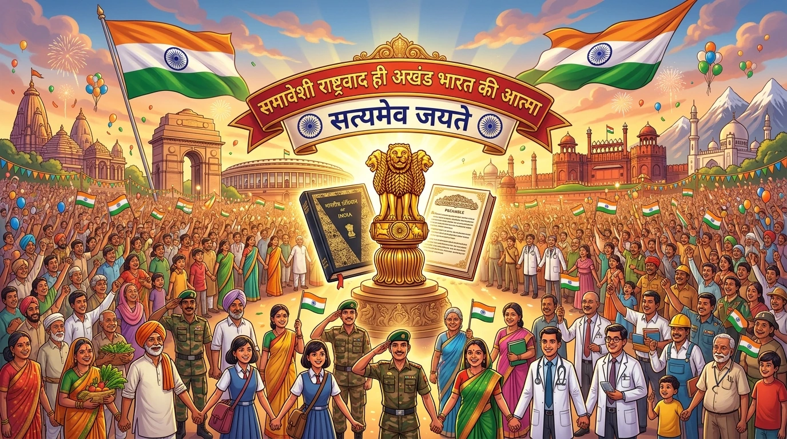
🎨 कार्टून 20 विश्लेषण: अध्याय निष्कर्ष—समावेशी राष्ट्रवाद ही अखंड भारत की आत्मा
चित्र का मुख्य संदेश: अशोक स्तंभ, संविधान और राष्ट्रीय ध्वज के चारों ओर एकजुट खड़े भारत के किसान, सैनिक, वैज्ञानिक, शिक्षक और विद्यार्थी—यह दृश्य बताता है कि समावेशी राष्ट्रवाद ही अखंड भारत की अमर आत्मा है!